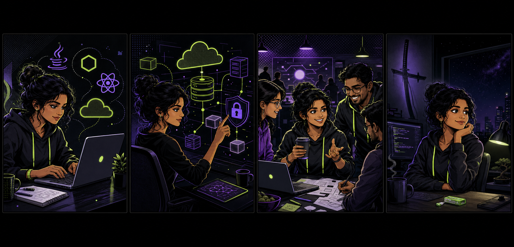

Developer conversations
I love talking with other developers and hearing about the amazing work they’re doing — the weird bugs, the elegant breakthroughs, and the ideas still on the whiteboard.
✦ SENIOR DEVSECOPS FULL-STACK SECURITY ENGINEER · 2026
I'm Prasanna Reddy — a full-stack engineer with 5 years of experience building secure, scalable applications for fintech and digital platforms.
↓01 / ORIGIN STORY

CHAPTER 01Chennai-based full-stack developer with 5 years of experience.
CHAPTER 02Building secure fintech and cloud systems with a DevSecOps mindset.
CHAPTER 03Always up for a developer conversation, coffee, gum, and a great problem.
02 / SELECTED WORK
DEVELOPER EXPERIENCE · PROJECT LEAD
A documentation hub that helps developers search, explore, and access rich NPM package information quickly.
secure savings =
automated();
→ AWS / GraphQLUK FINTECH
A flexible savings-account solution supporting fixed-rate profit and automated recurring transfers in GBP, EUR, and USD.
REAL-TIME COMMUNICATION
A secure one-to-one video-calling platform with invite-token verification and moderator control.
scan → secure
SBOM / SLSA / NTIADEVSECOPS · SOFTWARE SUPPLY CHAIN
Compliance-ready SBOM generation for applications, vendor binaries, operating systems, and databases.
TRANSACTION MANAGEMENT
A platform for secure transaction authorization, validation, limit checks, bank authentication, and traceability.
verify (customer);
queue();KYC OPERATIONS
A scalable platform for customer KYC records, queued jobs, and scheduled operations.
CLOUD STORAGE · PROJECT LEAD
A large-file upload, storage, and deletion-history service with granular access control.
02 / ABOUT ME
I design secure, reliable software across full-stack engineering and cloud platforms — with deep experience in fintech, compliance, and high-performance systems.
Java · Spring Boot · Node.js · React · TypeScript
AWS · GCP · PostgreSQL · MySQL · MongoDB
45% revenue growth · 54% cloud-cost reduction · 95% customer satisfaction
03 / BEYOND THE BUILD
A passionate developer with a soft spot for ambitious side projects, deep technical rabbit holes, and the people who make the work better.
I love talking with other developers and hearing about the amazing work they’re doing — the weird bugs, the elegant breakthroughs, and the ideas still on the whiteboard.
Coffee nearby, a fresh problem to untangle, a hackathon-sized burst of focus, and enough curiosity to keep opening one more documentation tab.
Gum freak. Demon Slayer fan. Serious about scalable systems, equally serious about keeping a build session interesting.
04 / EXPLORE MY WORK
Senior full-stack engineer focused on secure, scalable digital systems.
05 / WORK HISTORY
Senior DevSecOps Full-Stack Security Engineer
Building secure inventory dashboards and REST APIs; developing SBOM workflows and researching secure developer tooling.
Senior Software Developer
Designed resilient, serverless banking systems and secure APIs with cloud-native event-driven architecture.
Software Developer
Built scalable backend systems, real-time data flows, and reliable release pipelines for core fintech products.
Software Developer
Delivered web platforms, real-time video calling, file storage services, and developer onboarding support.